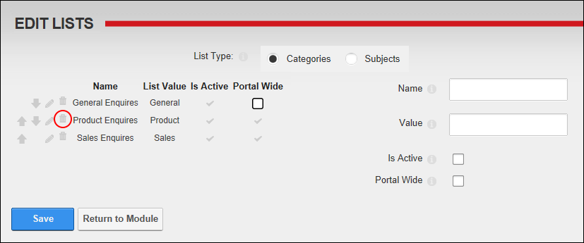

> Edit Category/Subject Lists from the module actions menu. This opens the Edit Lists page.
> Edit Category/Subject Lists from the module actions menu. This opens the Edit Lists page.How to permanently delete categories from the Feedback module. As an alternative to deleting a feedback category, you can deactivate it.
> Edit Category/Subject Lists from the module actions menu. This opens the Edit Lists page.